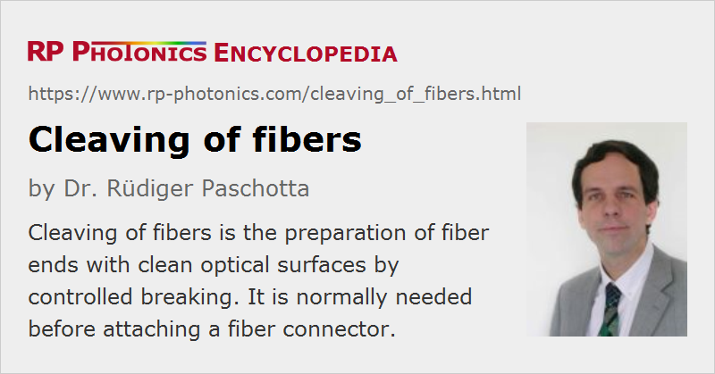

Cleaving of Fibers
Definition: preparing fiber ends with clean optical surfaces by controlled breaking
German: Spalten von Fasern
Category: fiber optics and waveguides
How to cite the article; suggest additional literature
Author: Dr. Rüdiger Paschotta
Fiber cleaving is an important technique in the area of fiber optics. When optical fibers are connectorized, when they should be fusion-spliced or when light should be launched into fibers, the fiber ends need to be prepared such they have clean surfaces. Usually, such surfaces should be as flat as possible, at least over the area of the fiber core (sometimes over the full cross-section), and often it is important that the surface is either perpendicular to the fiber axis or has a well-defined angle against the fiber axis.
Cleaving is the standard method to obtain such surfaces, or sometimes the first step towards that goal. It is a process of controlled breaking of the glass of a bare fiber. It begins with making a tiny fracture (scratch) on the side of the fiber, e.g. with a sharp diamond, carbide or ceramic blade, before or while some defined tension or bending is applied to the fiber. This causes the fiber to break, starting at the mentioned fracture point: the fracture rapidly propagates over the full fiber cross-section. Often, the cleaving leads to a very clean surface of the obtained two fiber parts.
Cleaving is not cutting, as the bulk of the process is just breaking. Only the initial tiny break is prepared with a blade.
Before cleaving, a fiber coating needs to be stripped off with a coating stripper tool, or dissolved with a suitable solvent. The latter technique – chemical stripping – may be required in problematic cases, but takes more time. Thermal stripping may be another option.
Sometimes, a new cleave is required when a fiber end has become dirty, as it is hard to reliably clean fiber ends.
Fiber Cleaving Tools
Tools for fiber cleaving are called fiber cleavers. Different kinds of such instruments are explained in the article on fiber cleavers. Simple and inexpensive cleavers, based e.g. on some pen-shaped scribes, are sufficient for simple purposes, when used with proper training. For a higher and more consistent cleave quality, which is less dependent on the operator, mechanical precision splicers are used, which are substantially more expensive.
Problematic Cases
The optimum settings of a mechanical fiber cleaver – in particular, the applied tension – substantially depend on details like the glass materials and the fiber diameter. Often, fiber cleavers are pre-adjusted for silica fibers with the standard diameter of 125 μm. For fluoride fibers or other mid-infrared fibers, for example, one may have difficulties finding suitable parameters for repeatable cleaving results.
Fibers with particularly large diameters, e.g. beyond 200 μm, can also be difficult to cleave. They need a higher tension force.
Photonic crystal fibers are also more problematic, particularly if they have large air holes. A somewhat reduced fiber tension during the cleaving process may help. Double-clad fibers with an air cladding are particularly challenging.
Cleaving of non-standard fibers may take many experiments and substantial practicing time until it works well. In some cases, it will not work at all, and more cumbersome techniques such as polishing (see below) are then required. Of course, a reasonable cleave is desirable as a starting point for quicker polishing.
Judging the Cleaving Results
The quality of the obtained cleaves has different aspects, the relevance of which depends on the application:
- If fibers should be fusion-spliced, the cleaved surfaces should be quite precisely perpendicular to the axis and must be smooth over the whole fiber cross-section. For example, one could not properly but together the fiber surfaces if a fiber had a small protrusion (a part standing out), even if that is only near the edge, far away from the fiber core. Also, only for smooth regular surfaces, the surface tension of the softened fibers will optimally self-align the fibers during the fusion process. In addition, a kink shape due to non-perpendicular cleaves can cause substantial coupling losses, particularly for large mode area fibers.
- If one only wants to launch light into a fiber end, or extract light from a fiber end, without having to bring the fiber end into contact with some other solid part, it may be fully sufficient to have a smooth surface only over the area of the fiber core. Some deviation from a normal (perpendicular) cleave may be irrelevant if the orientation of the fiber (or possibly that of a focusing or collimation lens) can be controlled for correcting the tilt angle.
- If the application is very sensitive to back-reflections, a large enough cleave angle is required. As the return loss depends exponentially on the cleave angle, it may not be acceptable e.g. to obtain only 6° instead of 8°. (Note that the larger is the effective mode area of the fiber, the smaller is the required cleave angle.)
- Conversely, if the Fresnel reflection of a fiber end needs to be exploited (e.g. for building a fiber laser), it is important to keep the cleave angle small – well below the beam divergence angle corresponding to the fiber mode. Large mode area fibers are more critical in this respect.
A microscope may be required to properly inspect the obtained fiber surfaces. There are hand-held microscopes for such purposes, and fusion splicing apparatuses also often contain a microscope.
Note that it is often very worthwhile to carefully inspect fiber cleaves before using them, as later on it may be much more tedious to locate a fault. Even with a mechanical precision cleaver, the results may not be fully reliable, because they require correct settings and can be spoiled by a defect blade, which is not easy to recognize.
Additional Treatment: Polishing
For very high-quality fiber surfaces, it is often necessary to apply some polishing procedure after cleaving. One may, for example, insert the fiber end into a hollow glass tube and fix it there with a glue. The tube gives the fiber a higher strength and is inserted into a polishing apparatus. The fiber is polished down together with the glass tube. This procedure allows one to produce a high-quality surface with an arbitrary well-defined orientation of the fiber surface. However, it takes substantially more time than simple cleaving.
Safety Risks from Fiber Scraps
When fibers are cleaved, one obtains small fiber scraps, which have extremely sharp ends. They may stick to a finger and can then be transported into an eye. They can also easily penetrate the skin and are hard to pull out. Fiber scraps should also not be ingested.
For such reasons, it is important to carefully dispose fiber scraps into a properly marked container before they get lost. Also, one should take precautions to make them well visible in the working area, for example by using a black pad below the working area. In addition, one should avoid any eating or drinking near the work area.
Questions and Comments from Users
Here you can submit questions and comments. As far as they get accepted by the author, they will appear above this paragraph together with the author’s answer. The author will decide on acceptance based on certain criteria. Essentially, the issue must be of sufficiently broad interest.
Please do not enter personal data here; we would otherwise delete it soon. (See also our privacy declaration.) If you wish to receive personal feedback or consultancy from the author, please contact him e.g. via e-mail.
By submitting the information, you give your consent to the potential publication of your inputs on our website according to our rules. (If you later retract your consent, we will delete those inputs.) As your inputs are first reviewed by the author, they may be published with some delay.
See also: fiber cleavers, fibers, fiber connectors, fiber optics, fiber joints, fusion splicing of fibers
and other articles in the category fiber optics and waveguides
|  |
If you like this page, please share the link with your friends and colleagues, e.g. via social media:
These sharing buttons are implemented in a privacy-friendly way!